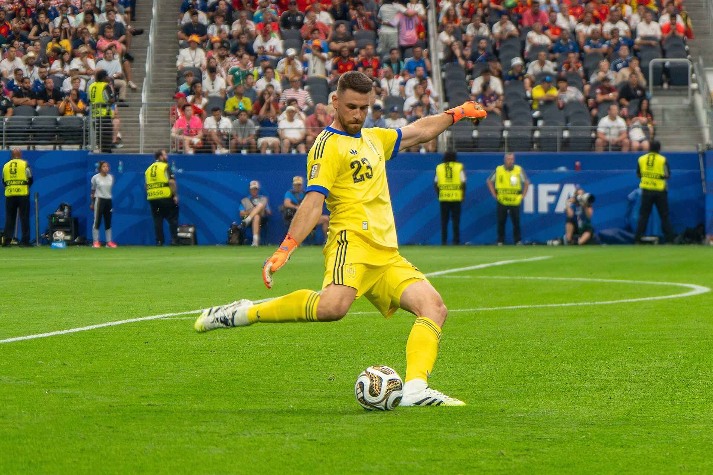

Se os gols definem o placar, são as defesas que muitas vezes sustentam uma campanha até a conquista de uma Copa do Mundo. Em um torneio curto, disputado sob enorme pressão e decidido frequentemente nos detalhes, passar uma partida sem ser vazado pode representar a diferença entre a eliminação e o título.
Ao longo da história do Mundial, goleiros como Peter Shilton, Fabien Barthez, Gianluigi Buffon, Cláudio Taffarel, Manuel Neuer e Oliver Kahn construíram marcas duradouras. A Copa do Mundo de 2026, porém, acrescentou um novo protagonista a essa relação: Unai Simón.
O goleiro espanhol foi decisivo na campanha que terminou com o segundo título mundial da Espanha, estabeleceu novos recordes defensivos e ficou a apenas uma partida sem sofrer gol dos líderes históricos do torneio.
Os números e recordes desta matéria estão atualizados após a conclusão da Copa do Mundo de 2026.
O topo da lista
Peter Shilton, da Inglaterra, e Fabien Barthez, da França, continuam dividindo o recorde de partidas sem sofrer gols na história da Copa do Mundo. Cada um encerrou sua trajetória no torneio com dez jogos sem ser vazado em 17 apresentações.
Shilton disputou as edições de 1982, 1986 e 1990. Titular da Inglaterra em três Mundiais, chegou à semifinal em 1990 e construiu sua marca em uma época na qual a seleção inglesa se destacava pela força física, pela organização e pela capacidade de controlar partidas eliminatórias.
Barthez também alcançou dez jogos sem sofrer gols em 17 partidas. O francês foi campeão em 1998, vice-campeão em 2006 e participou ainda da campanha de 2002. Na conquista realizada em território francês, sofreu apenas dois gols em sete jogos e recebeu o prêmio de melhor goleiro da competição.
A grande mudança após a Copa de 2026 foi a entrada de Unai Simón no terceiro lugar isolado. O espanhol chegou a nove jogos sem sofrer gols em apenas 12 partidas disputadas, aproximando-se rapidamente dos líderes.
Ranking de goleiros com mais jogos sem sofrer gols em Copas
- Peter Shilton, Inglaterra — 10 jogos em 17 partidas
- Fabien Barthez, França — 10 jogos em 17 partidas
- Unai Simón, Espanha — 9 jogos em 12 partidas
- Jan Jongbloed, Holanda — 8 jogos em 12 partidas
- Leão, Brasil — 8 jogos em 14 partidas
- Sepp Maier, Alemanha Ocidental — 8 jogos em 18 partidas
- Cláudio Taffarel, Brasil — 8 jogos em 18 partidas
- Hugo Lloris, França — 8 jogos em 20 partidas
- Thibaut Courtois, Bélgica — 8 jogos em 21 partidas
- Alisson, Brasil — 7 jogos 14 partidas
- Gilmar, Brasil — 7 jogos em 14 partidas
- Iker Casillas, Espanha — 7 jogos em 17 partidas
- Fernando Muslera, Uruguai — 7 jogos em 19 partidas
- Manuel Neuer, Alemanha — 7 jogos em 23 partidas
A lista mostra que o número total de partidas não garante automaticamente uma posição mais alta. Neuer, por exemplo, tornou-se o goleiro com mais jogos na história das Copas, mas terminou com menos partidas sem sofrer gols do que nomes que atuaram menos vezes.
Espanhol muda a história dos goleiros na Copa de 2026
A atuação de Unai Simón no Mundial disputado nos EUA, Canada e México entrou diretamente para o grupo das maiores campanhas individuais de um goleiro em Copas do Mundo.
A Espanha disputou oito partidas e sofreu somente um gol durante toda a competição. Simón terminou sete desses jogos sem ser vazado, estabelecendo o recorde de partidas sem sofrer gols em uma única edição do Mundial.
O desempenho defensivo sustentou a caminhada espanhola até a final contra a Argentina. Na decisão, disputada em 19 de julho de 2026, no New York New Jersey Stadium, a Espanha venceu por 1 a 0 após a prorrogação. Ferran Torres marcou o gol do título aos 106 minutos, enquanto Simón manteve mais uma vez a meta intacta.
A Espanha terminou a competição com a melhor campanha defensiva já registrada por uma seleção campeã. Simón recebeu a Luva de Ouro da Copa de 2026.
A maior sequência sem sofrer gols
Durante mais de três décadas, Walter Zenga foi o dono de um dos recordes defensivos mais famosos do futebol mundial.
O goleiro da Itália permaneceu 517 minutos consecutivos sem sofrer gols na Copa de 1990. A sequência começou na fase de grupos e atravessou cinco partidas completas. A invencibilidade terminou apenas na semifinal contra a Argentina, quando Claudio Caniggia marcou de cabeça no segundo tempo.
A Itália havia vencido Áustria, Estados Unidos, Tchecoslováquia, Uruguai e Irlanda sem sofrer gols. Mesmo eliminada nos pênaltis pela Argentina, a equipe encerrou o torneio com uma das defesas mais dominantes da história.
O recorde de Zenga foi superado em 2026 por Unai Simón. O espanhol alcançou 650 minutos consecutivos sem ser vazado em jogos de Copa do Mundo. Antes mesmo de chegar à marca definitiva, já havia ultrapassado Zenga ao completar 519 minutos.
A marca do espanhol ganhou ainda mais peso porque terminou acompanhada pelo título. Não foi apenas uma sequência construída em partidas de menor pressão: ele manteve o rendimento nas fases eliminatórias e voltou a passar sem sofrer gols na final.
Campanhas defensivas que levaram seleções ao título
A Espanha de 2026 passou a ocupar o primeiro lugar entre as seleções campeãs que sofreram menos gols em uma única edição. Foi apenas um gol em oito partidas, acompanhado por sete jogos sem ser vazada.
Antes disso, três goleiros dividiam uma marca histórica: Fabien Barthez, em 1998, Gianluigi Buffon, em 2006, e Iker Casillas, em 2010. Os três sofreram apenas dois gols durante campanhas que terminaram com suas seleções campeãs.
A defesa quase perfeita da Itália
A campanha italiana de 2006 continua entre as maiores demonstrações defensivas já vistas em uma Copa do Mundo.
Buffon sofreu somente dois gols em sete partidas. O primeiro foi um gol contra de Cristian Zaccardo diante dos Estados Unidos. O segundo saiu em uma cobrança de pênalti de Zinedine Zidane na final contra a França.
Isso significa que nenhum adversário conseguiu marcar contra Buffon em uma jogada de bola rolando durante toda a competição. O italiano foi decisivo na semifinal contra a Alemanha, vencida por 2 a 0 na prorrogação, e também teve participação importante na decisão disputada em Berlim.
Depois do empate por 1 a 1, a Itália derrotou a França nos pênaltis e conquistou seu quarto título mundial. Buffon recebeu a Luva de Ouro.
Casillas decidiu a Copa de 2010
A Espanha conquistou seu primeiro título mundial em 2010 com uma combinação de posse de bola, controle territorial e enorme segurança defensiva.
Iker Casillas sofreu dois gols na fase de grupos e não voltou a ser vazado nas quatro partidas seguintes. A Espanha venceu Portugal, Paraguai, Alemanha e Holanda por 1 a 0 no mata-mata.
Nas quartas de final, defendeu um pênalti cobrado por Óscar Cardozo quando o jogo contra o Paraguai ainda estava empatado. Na final, impediu dois gols de Arjen Robben em oportunidades frente a frente e manteve o placar zerado até Andrés Iniesta marcar na prorrogação.
O goleiro com mais jogos em Copas
A Copa de 2026 também alterou o recorde de partidas disputadas por um goleiro.
Manuel Neuer chegou a 23 apresentações e superou o antigo recorde de Hugo Lloris, que havia atuado 20 vezes pela França. O alemão disputou cinco edições, entre 2010 e 2026, e foi campeão em 2014.
Neuer encerrou sua trajetória em Copas com sete jogos sem sofrer gols. Sua influência, porém, vai muito além das estatísticas. O alemão se tornou uma das principais referências do goleiro moderno, participando da construção ofensiva, avançando para fora da área e funcionando como um defensor adicional.
A atuação contra a Argélia nas oitavas de final de 2014 é um dos maiores exemplos dessa característica. Neuer realizou diversas intervenções longe do gol e foi fundamental para impedir contra-ataques em uma vitória alemã por 2 a 1 na prorrogação.
O Brasil entre as maiores escolas de goleiros das Copas
Conhecida mundialmente pela produção de atacantes e jogadores habilidosos, a Seleção Brasileira também ocupa posição de destaque nos recordes defensivos.
Durante a Copa de 2026, o Brasil se tornou a primeira seleção a alcançar 50 partidas sem sofrer gols na história do torneio. Entre os principais responsáveis pela marca aparecem Leão e Taffarel, ambos com oito jogos sem serem vazados, além de Gilmar e Alisson, com sete cada.
Cláudio Taffarel:
Disputou as Copas de 1990, 1994 e 1998, acumulando 18 partidas. Foi campeão nos Estados Unidos em 1994 e vice-campeão na França quatro anos depois.
Sua imagem ficou especialmente ligada às disputas por pênaltis. Na final de 1994, defendeu a cobrança de Daniele Massaro antes de Roberto Baggio finalizar por cima do travessão, resultado que confirmou o tetracampeonato brasileiro.
Na semifinal de 1998, contra a Holanda, Taffarel defendeu as cobranças de Phillip Cocu e Ronald de Boer. O Brasil avançou novamente à final e o goleiro consolidou sua posição entre os maiores nomes da história da seleção.
Gilmar:
Titular nas conquistas de 1958 e 1962, ele é o único goleiro brasileiro a ter vencido duas Copas do Mundo atuando como titular.
Em 1958, sofreu quatro gols em seis jogos e passou quatro partidas sem ser vazado.
Quatro anos depois, voltou a ser um dos pilares de uma seleção que precisou superar a lesão de Pelé e derrotou a Tchecoslováquia na final.
Leão:
Emerson Leão disputou quatro edições e foi titular em 1974 e 1978. Com oito partidas sem sofrer gols em 14 apresentações, divide com Taffarel a melhor marca entre goleiros brasileiros.
A Seleção de 1978 terminou o Mundial invicta e sofreu apenas três gols em sete jogos, mas ficou fora da final pelo saldo de gols na segunda fase.
Alisson:
Após a Copa de 2026, Alisson chegou a sete jogos sem sofrer gols em 14 partidas, igualando a marca de Gilmar.
O goleiro foi titular brasileiro nas edições de 2018, 2022 e 2026. Embora não tenha conquistado o título, passou a integrar o grupo dos dez goleiros com mais partidas sem ser vazado na história do torneio.
O recorde de seis Copas
Antonio Carbajal entrou para a história ao se tornar o primeiro jogador presente em cinco edições da Copa do Mundo. O goleiro mexicano participou dos torneios de 1950, 1954, 1958, 1962 e 1966, ganhando o apelido de “Cinco Copas”.
A marca foi ampliada em 2026 por outro goleiro do México. Guillermo Ochoa integrou sua sexta Copa do Mundo, depois de ter sido convocado também em 2006, 2010, 2014, 2018 e 2022.
Ochoa não entrou em campo nas duas primeiras edições, mas virou titular em 2014 e protagonizou atuações memoráveis, especialmente no empate por 0 a 0 contra o Brasil. Em 2026, recebeu minutos em campo e confirmou sua presença efetiva em um sexto Mundial.
O único goleiro eleito melhor jogador de uma Copa
A campanha de Oliver Kahn em 2002 permanece como uma das maiores atuações individuais de um goleiro em um Mundial.
A Alemanha chegou à final sofrendo apenas um gol nos seis primeiros jogos. Kahn realizou defesas decisivas contra Paraguai, Estados Unidos e Coreia do Sul, conduzindo uma seleção que não aparecia entre as grandes favoritas antes do torneio.
Na final, o goleiro falhou no primeiro gol de Ronaldo, e o Brasil venceu por 2 a 0. Ainda assim, Kahn recebeu a Bola de Ouro como melhor jogador da Copa. Até hoje, é o único goleiro a conquistar o principal prêmio individual do torneio.
Goleiros que marcaram nas penalidades
As disputas por pênaltis transformaram diversos goleiros em personagens centrais da história da Copa do Mundo.
Sergio Goycochea foi fundamental para a Argentina chegar à final de 1990. Reserva no início da competição, assumiu a titularidade após a lesão de Nery Pumpido e decidiu as disputas contra Iugoslávia e Itália.
Harald Schumacher classificou a Alemanha Ocidental contra a França na histórica semifinal de 1982 e voltou a vencer uma disputa por pênaltis diante do México em 1986.
Taffarel decidiu contra Holanda e Itália, enquanto Jens Lehmann defendeu duas cobranças argentinas nas quartas de final de 2006. Em 2014, Keylor Navas levou a Costa Rica às quartas, e Tim Krul entrou apenas para a disputa contra os costarriquenhos e defendeu dois pênaltis.
Em 2022, Emiliano Martínez foi um dos protagonistas do título argentino. O goleiro decidiu contra a Holanda nas quartas, fez uma defesa fundamental diante de Randal Kolo Muani no último minuto da prorrogação da final e voltou a aparecer na disputa de pênaltis contra a França.
O peso de uma defesa forte na conquista da Copa
A história mostra que praticamente nenhuma seleção conquista uma Copa do Mundo sem apresentar segurança defensiva.
O Brasil de 1994 sofreu três gols. A França de 1998 sofreu dois. A Itália de 2006, a Espanha de 2010 e de 2026 também construíram seus títulos a partir de defesas extremamente eficientes.
Isso não significa apenas recuar ou jogar de maneira conservadora. As melhores defesas da história do Mundial combinaram goleiros decisivos, proteção da área, controle da posse de bola, pressão sobre o adversário e capacidade para reduzir o número de oportunidades perigosas.
No outro extremo do campo, os atacantes também construíram marcas que atravessaram gerações. A evolução desses números pode ser acompanhada na relação dos artilheiros da Copa do Mundo.
Recordes defensivos nas próximas edições
Peter Shilton e Fabien Barthez seguem na liderança com dez jogos sem sofrer gols, mas o recorde deixou de parecer distante depois da campanha de Unai Simón.
Com nove partidas sem ser vazado em 12 apresentações, o espanhol precisa de apenas mais um jogo sem sofrer gol para igualar a marca e de dois para assumir a liderança isolada.
Seu recorde de sete partidas sem ser vazado em uma única edição e a sequência de 650 minutos parecem mais difíceis de alcançar. Ambos exigem regularidade durante praticamente um torneio inteiro, além de uma combinação rara de desempenho individual, organização coletiva e avanço até as fases decisivas.
A Copa de 2026 mostrou que os grandes recordes dos goleiros não pertencem apenas ao passado. Em uma edição, Simón superou Zenga, estabeleceu a melhor campanha de jogos sem sofrer gols em um único Mundial, conquistou a Luva de Ouro e ficou muito perto da liderança histórica de Shilton e Barthez.
Atacantes costumam ocupar as capas e produzir os momentos mais celebrados, mas títulos mundiais também são construídos por defesas que parecem impossíveis, pênaltis defendidos e longas sequências sem buscar a bola no fundo da rede. Sob as traves, cada intervenção pode mudar não apenas uma partida, mas toda a história de uma Copa do Mundo.